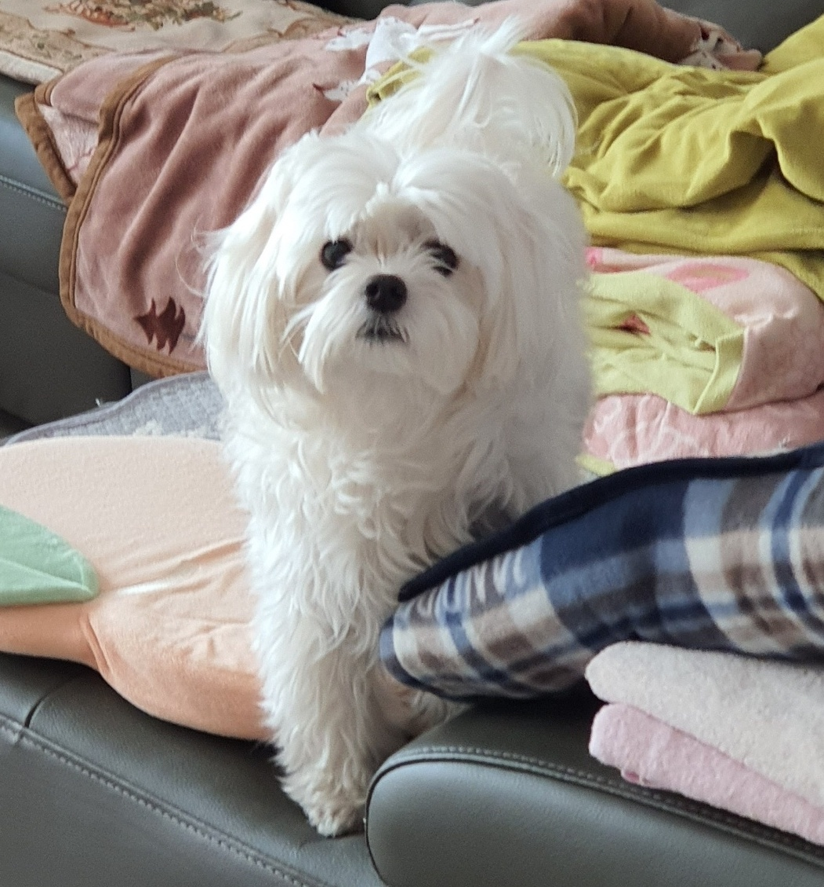
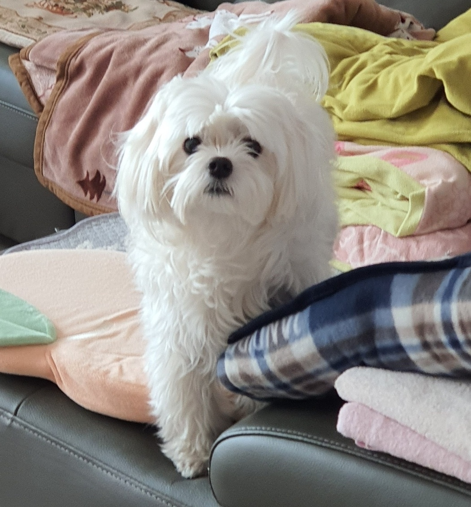

-

<Profile>
이름 이서후 생년월일 2001년 3월 15일 혈액형 B형 가족 엄마, 아빠, 언니, 두부(반려견) 출생지 부산 거주지 수원 직업 학생 학력 소화초등학교 졸업
동성중학교 졸업
수원여자고등학교 졸업
건국대학교 재학중취미 동물과 교감하기
공포영화 감상하기
힙합, 팝송 감상하기
게임하기
소설, 만화 읽기성격 착하고 예의바름
자존심이 강함
화나면 무서움
 


-
Q1. 본인의 장점은?
A1. 제 입으로 말하기는 부끄럽지만 착해요(*^ ^*)
그리고 제 맘에 들 때까지 꼼꼼히 일해요! (물론 지금도요!)
Q2. 본인의 단점은?
A2. 뭐든지 잘해내고 싶은 마음에 시간이 오래 걸립니다(ㅠ_ㅠ)
Q3. 본인 방에서 가장 중요한 물건은?
A3. 솔직하게 침대를 정말정말 아끼지만 보물 1호는 살면서 받은 편지들이에요!
Q4. 본인의 반전매력은?
A4. 공포영화를 잘보는 편은 아니지만 즐겨봅니다!
잔인한 고어 영화는 잘봐요~♬
Q5. 본인의 하루일과는?
A5. 외출하면 카페에서 공부한 후 피시방을 가거나 두부 산책해요. 외출안하면 집에서 강의듣고 과제하고 실습합니다.. (참고로 지금도 집입니다...)

Q6. 싫어하는 음식은?
A6. 두부는 좋아하는데 콩은 싫고 아보카도랑 카레도 좋아하지는 않아요.

Q7. 좋아하는 음식은?
A7. 육류는 모든 옳지만 특히 소고기를 좋아하고 망고같은 열대과일 좋아하고 민트초코 좋아해요!
Q8. 좋아하는 색깔은?
A8. 유리같은 느낌을 좋아해서 투명색이 좋고 무채색도 좋아해요!

Q9. 좋아하는 연예인은?
A9. 아이돌보다는 공유같은 사람 좋아해요!
Q10. 좋아하는 노래장르는?
A10. 원래 국내힙합을 좋아했는데 요즘은 외국힙합도 좋고 팝송도 좋아해요!
Q11. 좋아하는 영화장르는?
A11. 반전 좋아하고 공포, 추리, 미스테리 영화 좋아해요!
Q12. 가보고 싶은 해외여행지는?
A12. 힐링하러 하와이 가보고 싶고 터키는 개인적으로 가보고 싶어요!
Q13. 해보고 싶은 일은?
A13. OT도 가보고 싶고 MT도 가보고 싶고 대학축제도 가보고 싶어요..
Q14. 일상 속 소소한 행복은?
A14. 두부 간식 줄 때, 두부 자는 모습 볼 때, 장난칠 때 행복해요!
Q15. 배우고 싶은 분야가 있다면?
A15. 영상, 사진, 그림 등과 관련해서 편집을 배워보고 싶어요!
Q16. 앞으로의 계획은?
A16. 구체적인 계획은 없지만 취업준비를 하지 않을까 싶어요. 2학년 말에 휴학하고 알바도 해보면서 진지하게 생각해보려고요!
Q17. 소원이 있다면?
A17. 주변 사람들이 안아프고 행복했으면 좋겠어요. 아참! 책임감 없이 평생 먹고 놀면서 살고 싶어요!!
Q18. 살면서 가장 후회하는 일은?
A18. 상처받을 말인 것 알면서 상대방한테 뱉은 일, 없던 일로 되돌리고 싶어요.
Q19. 살면서 가장 속상했던 일은?
A19. 스무살과 대학생활을 기대하면서 살아왔는데 현실이 기대에 못 미쳐 속상해요...
Q20. 뭐든지 할 수 있다면 지금당장 하고싶은 일은?
A20. 해외 여행 절실하게 가고싶어요! 그리고 자가용이 생겨서 사람없는 대로를 달려보고 싶어요!!
-
나이브스 아웃 Knives Out, 개봉 2019.12.04 재개봉 2021.01.14 장르 미스터리/스릴러 국가 미국 등급 12세이상관람가 러닝타임 130분 평점 ★8.1 누적관객 819,146명 수상내역 24회 새틀라이트시상식, 2020
Q1.언제 본 영화인가요?
A1. 2020년 여름에 봤습니다.
Q2. 어디서 어떤 경로로 본 영화인가요?
A2. 설빙에서 태블릿으로 티빙이라는 어플을 통해 봤습니다.
Q3. 영화를 보게 된 계기가 있나요?
A3. 친구와 티빙에 있는 영화를 살펴보다 평이 좋아서 보게 되었습니다.
Q4. 감독은?
A4.
라이언 존슨
Q5. 주연 배우는?
A5.
브누아 블랑 역 랜섬 역 마르타 역 린다 역 조니 역 다니엘 크레이그 크리스 에반스 아나 디 아르마스 제이미 리커티스 토니 콜렛
Q6. 왜 기억에 남나요?
A6. 베스트셀러 미스터리 작가가 85세 생일에 죽음을 맞이하는데 죽음의 원인을 생각도 못했어서 기억에 남습니다.
Q7. 누구에게 추천하나요?
A7. 추리물을 좋아하는 사람과 반전을 좋아하는 분께 추천합니다.
-
<Knives out>
영화를 소개하기 전에 “Knives Out”의 의미에 대해서 찾아봤는데, 이 말을 뜻대로 직역하게 되면 “칼을 뽑다” 혹은 “칼을 꺼내 들다”라는 의미이다. 그렇지만 숙어로 해석해본다면 영화에 더 어울리게 “누군가를 비난의 대상으로 삼다”라는 뜻에 가깝다.
매사추세츠에 사는 유명 추리소설 작가 “할런 트롬비”는 85번째 생일을 맞이하여 모든 가족이 그의 집에 모인다. 다음날, 할런 트롬비의 목에 자상이 난 상태로 사망한 채 발견된다. 경찰에 신고하고 장례를 치르는데...
그날 밤에 무슨 일이 있었을까? 할런의 간병인인 마르타는 할런에게 주사를 놓기 위해 서재로 올라갔다. 마르타는 할런에게 두 가지 주사를 놓는다. 하나는 다친 어깨 통증으로 인한 소염진통제 주사고 다른 하나는 밤에 잠을 잘 잘 수 있도록 놓는 소량의 모르핀 주사이다. 그런데 마르타는 할런과 수다를 떠는 바람에 진통제와 모르핀을 바꿔 주입했고 그 결과 치사량의 모르핀을 투여하였다는 것을 알게 된다. 모르핀 해독제인 날록손을 10분 내로 투여하지 않으면 할런의 목숨이 위험했으나 의료가방에 날록손이 들어있지 않았고, 할런은 마르타를 보호하기 위해 구급차를 부르기 거부한다. 할런은 그의 자살극으로 꾸미기 위해 마르타에게 본인의 시나리오대로 자정에 집으로 돌아갔고 할런은 칼로 본인의 목을 긋는다.
경찰은 스스로 목숨을 끊은 걸로 처리하려 했으나 익명의 누군가에게 의뢰를 받은 브누아 블랑 탐정은 가족과 간병인, 가정부 등 생일 당일 집에 있던 사람들을 대상으로 조사한다. 첫째 딸 린다, 그의 남편 리처드, 죽은 둘째 아들 닐의 아내 조니, 막내아들 월트는 자수성가한 자녀들처럼 보이지만 사실 아버지 할런에게 경제적으로 의존하며 할런이 남긴 유산에만 눈독 들이는 가족들이었다. 가정부 프랜은 죽음의 최초목격자였고 랜섬을 좋지 않게 봐왔다. 블랑은 마르타에게 수사를 도와주기를 부탁했는데 마르타는 본인 때문에 할란이 죽었다는 것을 알고 거짓말을 하면 구토를 해서 매 순간이 가시방석이었다.
할런의 모든 재산이 마르타에게 상속될 것이라는 유언장이 발표되자 가족들의 모든 화살은 마르타에게 돌아간다. 마르타는 랜섬의 도움으로 가족들로부터 도망치고 그에게 솔직하게 사실을 털어놓는다.
마르타는 자신이 한 짓에 대해 알고 있는 누군가로부터 할런의 찢어진 혈액검사 보고서 사본을 받는다. 혈액검사 보고서에 모르핀 성분이 발견되면 꼼짝없이 범인이 될 텐데, 발신자가 가지고 있는 원본을 없애면 마르타의 혐의가 탄로나지 않을 거라는 랜섬의 말을 믿은 마르타는 발신자가 지정한 장소에 나간다. 그곳에서 모르핀에 중독된 프랜을 발견한다. 마르타는 프랜을 살리면 본인의 죄가 드러날 것임을 알고서도 응급처치를 한다. 하지만 블랑은 프랜이 숨겨놓은 혈액검사 보고서 원본에서 할런의 사인이 모르핀 중독이 아니었음을 발견한다. 모든 사실을 말하고 트롬비 가족들에게도 진실을 밝히려 하지만 블랑이 그녀를 막아선다.
과연 진범은 누구일까?
악의를 가진 범인은 바로 “랜섬”이었다. 할런의 생일 파티 날 그는 할런으로부터 모든 유산이 마르타에게 상속될 것임을 듣고 일을 꾸몄다. 할런이 저녁마다 맞는 주사를 알았던 랜섬은 두 약을 바꾸고 해독제인 날록손을 가져갔다. 그러나 할런에게 매일 주사해온 마르타는 약병을 보지 않고도 올바르게 약을 투여했지만, 약병을 보고 당황해하고 위의 일이 일어난다. 혈액검사 보고서에는 랜섬의 계획과 다르게 모르핀이 검출되지 않자 마르타의 결백이 밝혀지지 않도록 혈액 샘플들을 모조리 없앤다. 이후 랜섬이 할런의 서재에서 증거를 없애는 모습을 본 프랜은 그를 협박하기 위해 혈액검사 보고서 일부를 보낸다. 그러나 랜섬은 오히려 이 보고서의 일부를 마르타에게 보냈던 것이었다. 랜섬은 모르핀을 투여해 프랜을 살해하고 마르타를 그 장소로 보내 프랜의 살인 누명까지 덮어씌우려고 했는데 착한 심성의 주인공이 프랜을 살린다.
결국 모든 것이 탄로 나고 도망칠 수 없자 랜섬은 나이프 체어에 있던 칼 하나를 뽑아 마르타를 죽이려고 달려드는데...
반전에 반전으로 가짜 칼이었고 랜섬은 잡혀간다.
사건의 전말이 밝혀지고 마르타에게 모든 유산이 합법적으로 상속되어 “마이 하우스, 마이 룰, 마이 커피”라는 문구가 있는 머그잔으로 음료를 마시고 할런의 가족은 쓸쓸히 떠난다.
보통 살인에 대해 추리하는 영화의 경우, 갑자기 누군가 죽고 그래서 탐정이 사건을 풀어나가서 어떻게 죽게 되었을지를 유추한다. 나이브스 아웃은 영화 중반이 되기 전 할런이 어떻게 죽었을지를 먼저 알려주고 범인을 미리 밝혔지만, 너무 착했고 진짜 범인도 아니었다. 그리고 진짜 범인이 탄로 났을 때 범행을 저지르게 한 동기인 마르타를 칼로 죽이려고 했을 때 가짜 칼이어서 위기를 피하면서 한 번 더 반전이었다. 밝혀진 범인이 진짜인지를 의심하고 아니라면 누가 범인인지를 생각해야 했기에 더 몰입해서 볼 수 있었다. 데드풀로 유명한 번역가 황석희님께서 번역하셔서 언어의 한계로 막힘 없이 흥미롭게 볼 수 있었다.